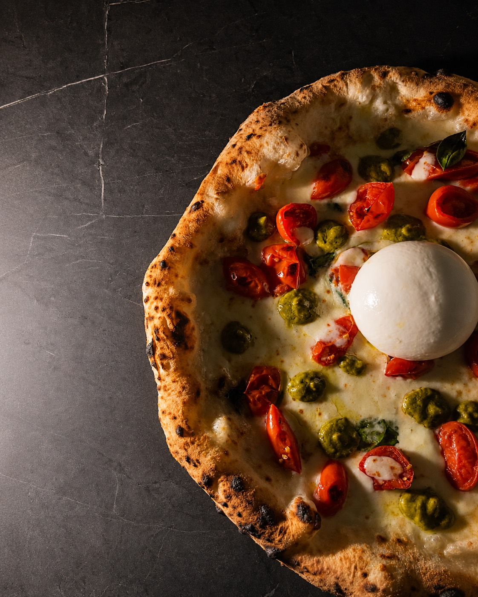
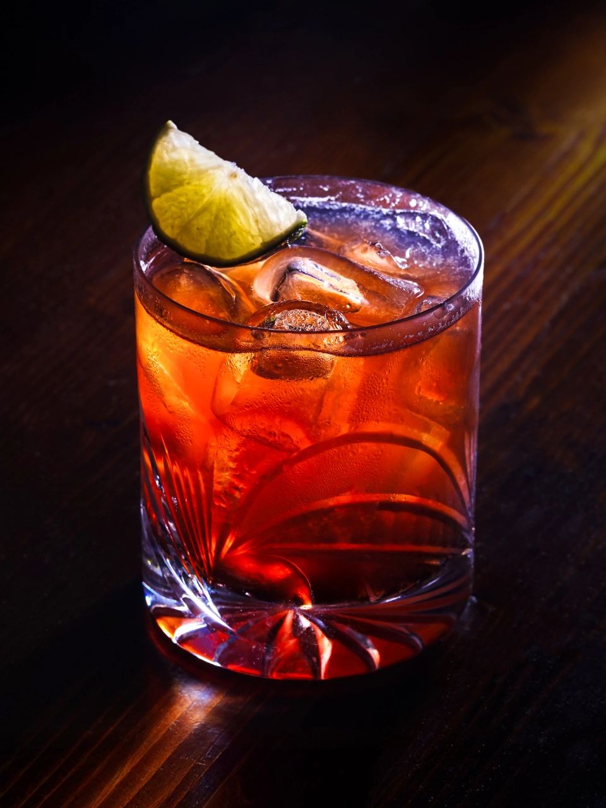
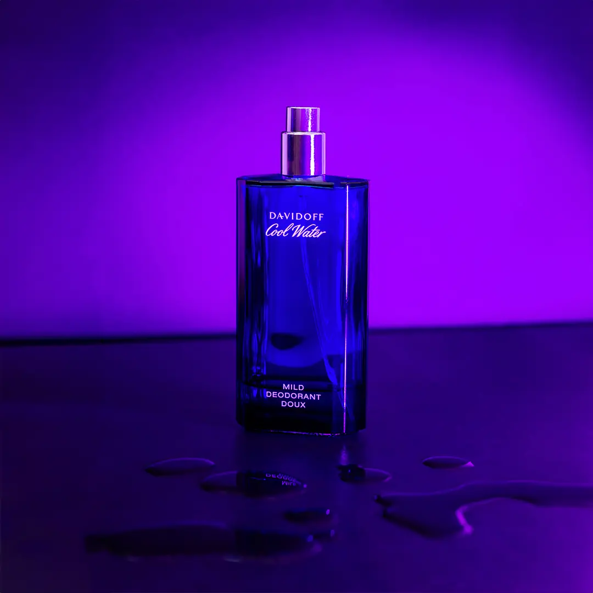
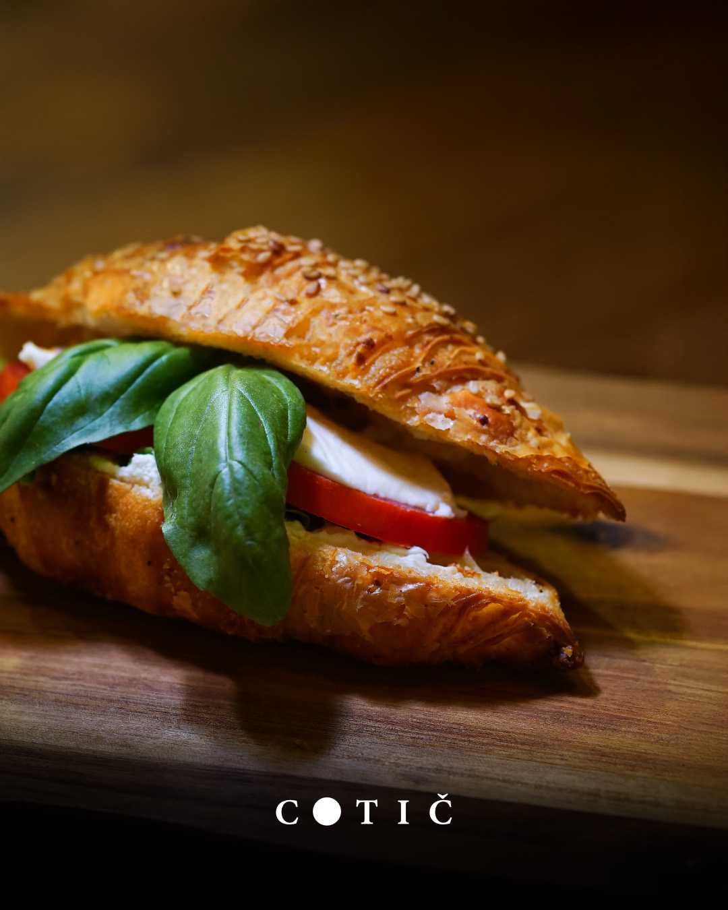
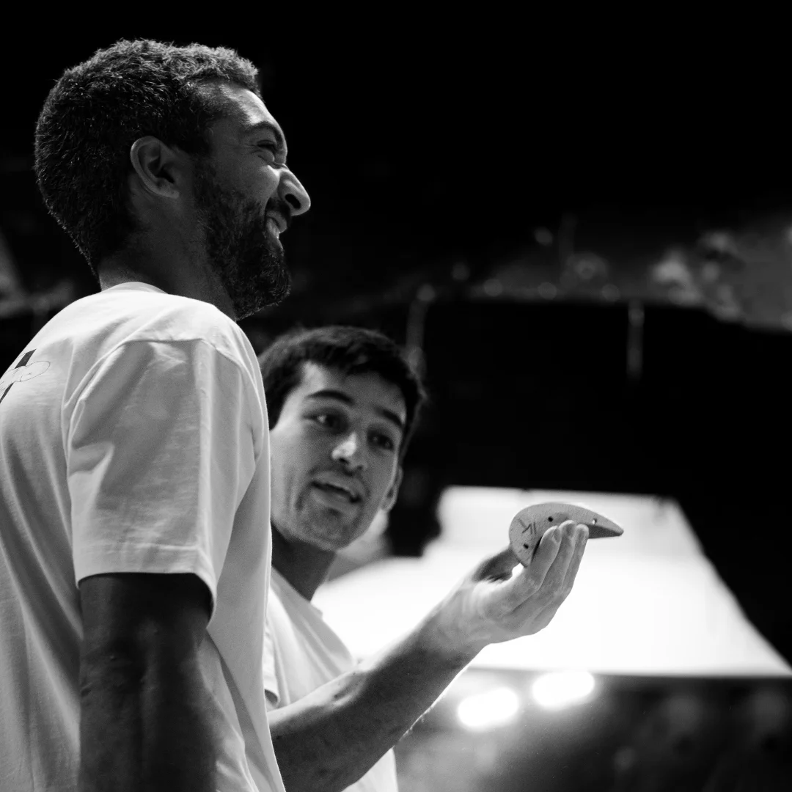
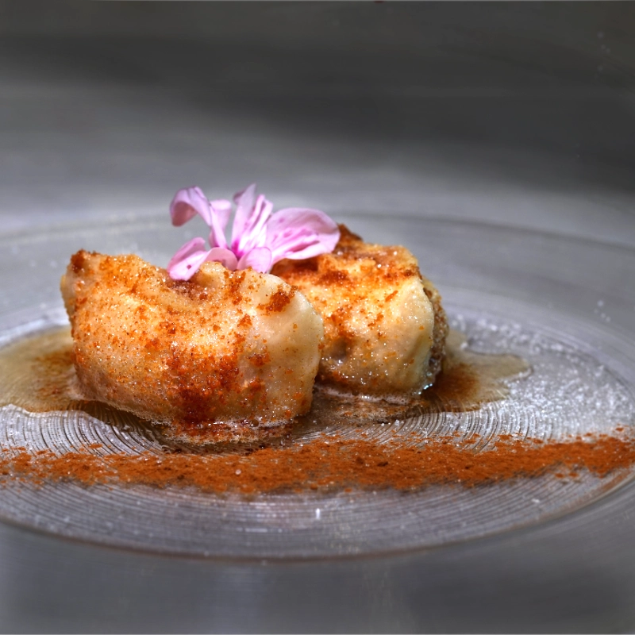

Creazione contenuti a Gorizia per i tuoi social e il tuo brand
Foto, video e reel pensati per i social di aziende e professionisti. Un’unica regia per contenuti coerenti, riconoscibili e pronti da pubblicare — a Gorizia, Nova Gorica e in tutto il Friuli Venezia Giulia.
Oggi un brand vive di contenuti. Devono essere buoni.
Le persone ti conoscono prima dai contenuti che dal preventivo: una foto, un reel, una storia. Se quei contenuti sono deboli, l’attività sembra valere meno — anche quando il prodotto è ottimo.
Come content creator a Gorizia produco foto e video pensati per il feed: scatti che fanno fermare lo scroll, reel che si guardano fino in fondo, immagini che alzano il percepito del brand al primo colpo d’occhio.
Cosa comprende la creazione contenuti
Foto per i social — prodotto, food, ambienti, persone. Immagini curate per feed, storie e schede, anche con riprese aeree da drone dove serve.
Video e reel — reel verticali 9:16, brand video brevi, video di prodotto e food. Riprese, montaggio e ritmo pensati per il tuo settore e il tuo pubblico.
Contenuti coordinati con la grafica — loghi, testi e template che rendono i contenuti riconoscibili e coerenti tra un post e l’altro.
Pacchetti mensili di contenuti — un piano con shooting periodici e consegna regolare di foto e video pronti, per chi pubblica con continuità.






Per chi creo contenuti
Lavoro soprattutto con realtà che vivono di immagine e presenza online: ristoranti, bar e pizzerie, centri estetici e beauty, attività nautiche, agenzie immobiliari e real estate, eventi e attività commerciali.
Sono i settori in cui un buon contenuto fa la differenza tra essere scelti o scrollati via. Per ognuno costruisco un linguaggio visivo coerente, da declinare su feed, storie, reel, sito e materiali.
La parte di strategia social, campagne e pubblicazione la seguo attraverso Spark & Plan, il mio progetto dedicato al marketing e al digitale: io creo i contenuti, Spark & Plan li mette in strategia.
Approfondisci: Fotografia professionale a Gorizia · Video e reel · Grafica e brand · Tutti i servizi
Vuoi contenuti che ti facciano scegliere?
Raccontami la tua attività e dove vuoi pubblicare. Ti rispondo entro 24 ore.